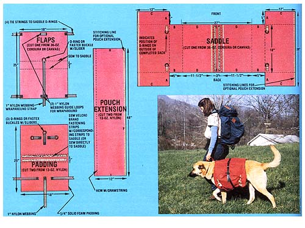
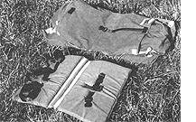
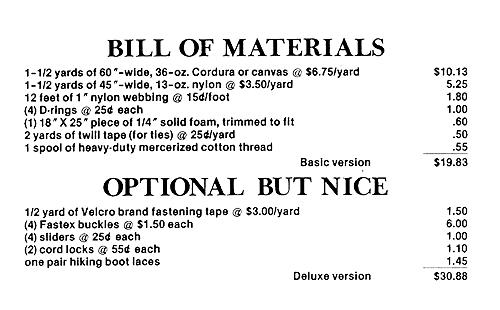

Dog Packing
by Miki and Julie Collins
July/August 1983
Tired of Rover's roaming while you stagger along under a heavy backpack?
When the winter snows finally melt up here in Alaska, we put away our dog sleds and skis. Why, we even let the huskies relax for a while . . . until summer comes and it's time to bring out the dog packs!
We use these pint-size "saddlebags" for activities that range from short berry-picking hikes to major cross-country expeditions, and we've found that our pack-toting canines can really ease our burdens. A trained dog-in good condition-can carry up to a third of its own weight (and more than that for a short distance). That means that a 90-pound husky can support 30 pounds of dog food, camping equipment, berries, fish, or whatever else can be stuffed into a pouch.
It's pretty obvious that the bigger the dog, the more it can pack. Malamutes are a good breed for packing, being large and sturdily built. Other sled dogs-such as our local "village" breed and Alaskan huskies are likely to have longer legs and lighter frames than malamutes, which limit the amount they can transport. Still, these other types are very tough and won't wear out if they're not overloaded. Large breeds such as Saint Bernards and Great Pyrenees are fine for packing, too, though thickly furred animals have a tendency to become overheated. But whether a dog is traditionally suited for packing or not, any canine-be it a mastiff or a Chihuahua-can be taught to carry its share of the load.
THE PACK
The basic dog pack consists of two simple pouches-one hanging on each side of the animal's rib cage-connected by a cloth saddle that rests on the dog's back. The underside of the saddle should be padded as a protection against friction sores or gouges from sharp cornered objects carried in the sacks, and the carrier should be securely fastened on by means of a harness. This rigging usually includes a chest strap, one or two belly straps, and sometimes a tail strap . . . all of which can be adjusted to prevent the dog from throwing off the pack.
When loading the pouches, always be careful to balance their weights evenly. If one is heavier than the other by even a small amount, the pack will become lopsided, with one sack hanging near the ground and the other riding the dog's back uncomfortably. Unequal weighting will throw the animal off balance, and the low satchel may even drag along the ground or snag on bushes.
Put any weighty objects in the bottom of the pouches to keep the dog from being top heavy. And if you tie extra gear on the outside of the carrier, make sure that there are no loose ends or exposed flaps . . since such protrusions may catch on a branch, jerk the dog, and perhaps tear the sack's material.
Some dog packs have a handy wraparound strap, which simply loops around the dog pack and all-to hold everything securely in place. This surcingle also keeps each pouch in its proper position, preventing it from slipping up over the dog's back as it goes through thick brush. If you buy a model that does not have this useful feature, you can easily make such a strap with a length of I " nylon webbing-long enough to pass over the dog's body and the pack once or twice-with a metal O-ring or similar buckle attached at one end.
GIRDING UP
To harness your dog, place the empty carrier across its back, with the front evenly adjusted over the shoulders, and fasten the chest strap snugly. Then, after you've checked to make sure the pack is positioned correctly, cinch up the belly and tail straps (you may find that the harness arrangement varies from model to model). You can load a pack before placing it on your four-legged friend, but we don't recommend it: Full pouches are hard to manipulate.
Transforming a pet into a pack animal takes some practice. It's a good idea first to fit an empty pack onto Bowser and let the pooch run about for several minutes to an hour so that it can become accustomed to the feel of the knapsack. Then put in a light load-just a pound or two in each pouch and take your trainee for a walk. Carrying a light but bulky load on each side, the animal will soon learn to dodge around trees (without the bruising caused by repeated banging into trunks with a heavy pack). Do this exercise several days in a row, adding more weight to the pouches each time.
If you burden the dog heavily, it will sometimes stagger about and may fall to the ground. If this happens, help the animal up and encourage it on. With a little practice, it should soon be trotting along in style.
Still, try not to ask too much of your furry friend. Putting a heavy weight on an animal that's not used to packing-or overloading a well-conditioned one-is very hard on the dog and can leave it stiff and sore for days. Bear in mind, too, that a longhaired pack animal can quickly become overheated on warm days . . . and when you're both away from home, this can be a real problem.
Consequently, if you don't have adequate time to run your pet through a gradual training program, you should be wary of overloading its pack before you're certain of how much the animal can support. A reliable rule of thumb is that-for short hikesan untried dog should carry a load no heavier than a quarter of its own weight . . . and less than that for long treks. (Be prepared to shoulder the burden yourself if the pooch poops out!)
A side benefit of packing is that it can curb a roamer's wanderlust. Once a dog realizes that it's expected to work, it's usually content to walk just ahead or beside you on the trail. In fact, a trick that works for us when we need to put an active canine on a leash and it persists in pulling our arms (our sled animals are trained to pull, remember?) is to add weight to its pack until the.dog settles down. Then, as the animal tires, we transfer the surplus to our own backs. Let us share a few final words of advice.
Obviously, it would be foolhardy to put your great-grandmother's fine crystal stemware or any breakable object into a dog pack. In addition, if something must be kept dry, put it in a plastic bag before loading it onto the dog. Things that might harm a satchel-such as a catch of fish-should also be wrapped carefully beforehand.
Last, but very important, never let a load carrying animal swim ... unless you're there to hold it up if necessary. Otherwise, as water seeps into the pouches, the dog might drown under the weight of its own pack!
TAKING HOME A DOGGIE BAG
Commercially made dog packs range from small day packs to big, all-terrain cross country affairs. Some manufacturers offer sew-it-yourself kits that cost less than ready-made bags. We examined and evaluated several models, and here are our opinions of them.
The Bark Pack made by Eastern Mountain Sports (Dept. TMEN, Vose Farm Road, Peterborough, New Hampshire 03458) is very small, so it's suitable for dog training and one day hikes. Its little pouches aren't likely to catch on trees, but they won't hold very much, either. What's more, the pack isn't padded, so beware of putting sharp objects into it. It comes in red or navy, retails for $31.75 (plus $3.00 for shipping and handling), and may well be the best choice for novices.
The Wenaha pack-sold by Recreational Equipment, Inc. (Dept. TMEN, P.O. Box C88125, Seattle, Washington 98188)-is a large, sturdy model with padding built into the pouches. Two belly straps, a chest strap, and an optional wraparound strap hold the pack securely on the dog. The pouches close with zippers . . . waterproof material has been used to construct the bottom and lower sides . . . and D-rings at the top of each satchel can be used to anchor a tent atop the load. While the padding under the buckles is thick, it's a bit skimpy under the pouches. This red or green pack is excellent for cross-country trips because of its generous carrying capacity. It comes in four sizes (from extra-small to large) and sells for $34.95 postpaid.
A pack from Rae's Harness Shop (Dept. TMEN, 1524 East Dowling Road, No. 6, Anchorage, Alaska 99507) shares many of the Wenaha features. The main difference is that the Rae carrier has a separate, thickly padded saddle that is fastened onto the dog, with sacks attached to the saddle by a wide strip of Velcro brand fastener. The whole rig is held in place by a wraparound strap. The advantage of this arrangement is that the pack can be removed readily by loosening the wraparound strap while the saddle is left in place. Anyone who anticipates having to ford streams will appreciate this setup, which also facilitates placing a loaded pack on a dog. Rae's markets these packs in various sizes for prices ranging from $42.50 to $54.95 (shipping not included).
We use a pack made by Alaska Tent and Tarp (Dept. TMEN, 529 Front Street, Fairbanks, Alaska 99701). Its pouches are similar to the other types we've mentioned, except that-instead of being closed by zipperseach extends upward several inches and is pulled shut by a drawstring. This design permits the dog to carry a heavier load, but requires protective straps. There's also thick padding on the bottom of the pack's back and a harness that's quite different from those of the other packs: Two straps go over the dog's shoulders, join below the neck, pass together between the front legs, and separate at the "elbows" to attach to the bottom sides of the padding. An additional belly surcingle keeps the pack from riding forward. This harness is very similar to the "fish back"style used for pulling dogsleds, and it can perform this double func tion if you snap a tug rope onto the D-ring at the back of the pack. The rigging is fairly difficult to put onto a dog (and its size isn't adjustable), but it makes for a pack that's almost impossible to throw off. The model sells for a whopping $100, but it can be purchased as a precut kit for a more modest $34.50 (both prices postpaid) and assembled in a little under five hours.
In addition to the firms we've named, sev eral other sporting goods stores and outdoor outfitters should carry dog packs. What more, if you have the inclination, you ca make your own canine luggage by following the directions in the accompanying sidebar
So the next time you head for a hike, be for a few hours of berry-picking two mile off the road or a major cross-country camping trip, take along your hound or husk and let it do a fair share of the work! along the hem to make sure that the drawstring can travel cleanly, resewing that section afterwards.) To attach the second pouch extension to the other side of the saddle, we simply repeated the process.
You can finish off the pouches in various ways. The easiest method is to make a buttonhole in each hem and run a stout string through these openings. We decided to get a little fancy and used some pliers to set two eyelets in each hem, then threaded in a hiking boot lace. Each lace was secured by a cord lock . . . an inexpensive but classy looking addition.
SEW SOUR OWN DOG PACK
As far as material goes, a sturdy 36ounce Cordura (or canvas) is durable, lightweight, and water-repellent,, so it's the best choice for those parts of the pack that'll receive a great deal of wear . . . while 13ounce nylon will suffice for the other sections. Keep in mind that red or orange cloth will make the pack easier to spot if you become separated from your dog and may make finding a thrown pack easier if your pooch ever shows up without its luggage. Also, be sure to use a stout thread forsewing up the seams (Julie and Miki suggest dental floss!).
OK, once you've gathered up your materials, study the four pattern pieces, mark them on the fabric, and cut them out. You can vary the dimensions to suit your packing needs, keeping in mind that this pattern makes a large pack, one proportioned for a dog weighing 100 pounds or so. We didn't bother to add any extra material for seam allowances because of the pack's generous size. Simply use a consistent 3/8", 1/2", or whatever seam allowance you're accustomed to, and the pack should turn out fine.
Let's assume from the outset that everyone's on the honor system to pin those seams that he or she deems necessary, so that these directions can concentrate on the basic sequence of construction, rather than on the manner. On the saddle piece, then, you'll need to place A and B right sides together and stitch them. Now, set all the C and D right sides together and stitch. You'll have to pinch the material a bit where some of it's already caught in the A/B seam, but a bit of experimentation should result in a neat tuck. Next, turn the fabric right sides out, turn dawn the raw edges along the portion that will ride across the dog's back between the two pouches, and stitch there (these edges are shown on the diagram as distance E).
POUCH EXTENSIONS
Now, it's decision-making time. Examine the pouches that you've created and-if you're satisfied with their capacity-cover the raw edges with twill tape yr another sturdy seam binding, and skip to the "Padding" subhead that follows. On the other hand, if you're planning some long jaunts when your dog will be shouldering a bulkier share of the load than ordinary, you'll want to add optional pouch extensions, which will yield a very capacious pack. You may want to experiment a bit and fig ure out the construction technique that you're most comfortable with before you actually attach the extensions.
Here's how we did it. We turned down one of the long raw edges on an extension, turned it over again to create a 1 " hem far a drawstring, and then stitched away. After repeating the process on the other extension, we stitched the other long side (F on the diagram) along the outside of the pouch, right sides together. (We've marked the connecting edges of the saddle and extension in yellow on the pattern to help you visualize this step.) When we arrived at the saddle, we changed from sewing on the outside of the pack to sewing on the inside, so we just "hopped" over the seam and continued to sew the edge of the extension to the saddle, with the right sides still together. Sewing side I to H finished it up. (You may have to undo a bit of stitching
THE PADDING
Placing right sides together, stitch along the edges of the two padding pieces, leaving a generous opening on one side. Next, turn the section right sides out, stuff the foam rectangle through the slit, and close the gap with a slip stitch. If you like, you can now sew the padding to the saddle, but you'll have a more versatile dog pack if, instead, you run two parallel strips of Velcro brand fastening tape down the padding's center and corresponding strips down the spine of the saddle. This will allow you to remove the pack without having to unharness the animal.
THE FLAPS
Turn under and stitch the raw edges around the rectangle. Then sew the flaps to the saddle section (or the saddle/padding section, if you stitched those two pieces together), positioning them according to the diagram.
FINISHING UP
As we mentioned previously, we substituted the Fastex buckles with sliders for the 0-ring fasteners suggested by Miki and Julie. We used 1 " twill tape for the flap ties shown on the diagram and set metal brings at the spots indicated (in red) on the outside of the pack. (To allow you to snap on a leash, you can attach an optional bring at the back of the saddle.) Then we measured and stitched on the 1 " nylon webbing to complete the harness. As a nifty finishing touch, we sewed on an old-but still attractive-1979 Mother's Seminars patch.
In all, this project requires some planning and close attention to the work at hand (it's quite easy to gather the pouch extensions into another seam as you're sewing if you don't watch what you're doing), but the whole undertaking is eminently worthwhile . . . and produces an extremely professional-looking pack. So we tip our hats to Miki and Julie Collins for sharing a design that'll help any make-it-your self to create a more equitable division of labor between backpackers and their four-legged best friends.
 MIKI COLLINS LEFT. Julie Collins and Trapper display the separate saddle that cushions the dog pack sold by Rae's Harness Shop. ABOVE: Eastern Mountain Sports' small sack works well for day treks. RIGHT: The pouches on Alaska Tent & Tarp's high volume model tie with drawstrings and permit the dog to tote a heavier load. BELOW. The patterns for a homemade dog pack . . . and the completed carrier in use! |
 |
 |
|
 |
|
|